Android Setup
This setup is necessary for all the Firebase modules using Android and needs to be done once per project, and basically involves importing the google-services.json file into your project.
IMPORTANT
Please refer to this Helpdesk article for instructions on setting up an Android project.
-
Click the Settings icon (next to Project Overview) and select Project settings:
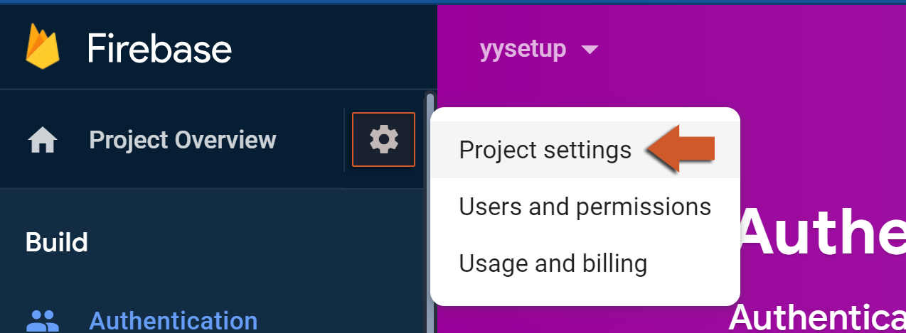 -
Now go to the Your apps section and click on the Android button:
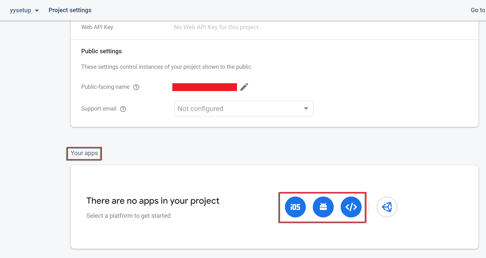 -
On this screen you need enter your Package name (required), App nickname (optional) and Debug signing certificate SHA-1 (required if you are using Firebase Authentication).
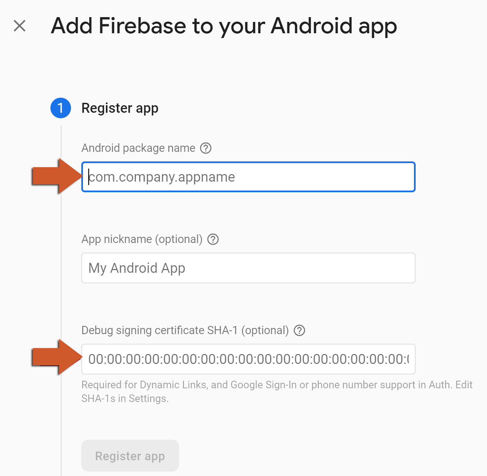 You can get your package name from the Android Game Options, and your Debug signing certificate SHA-1 from the Android Preferences (under Keystore):
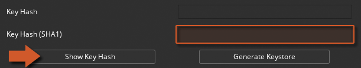 -
Click on ** Download google-services.json (make sure to save this file as we will need it in subsequent steps).
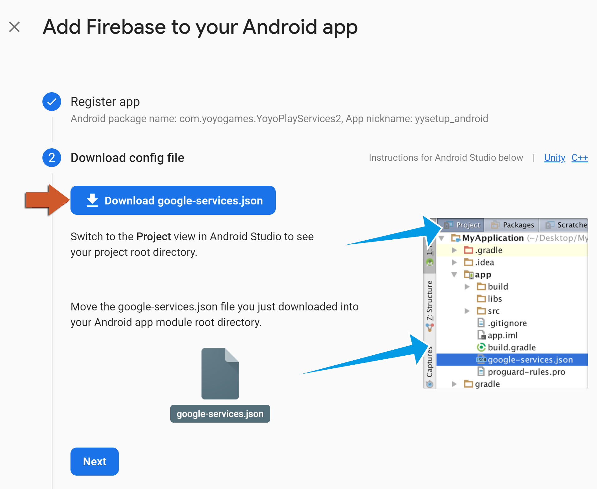 -
Ignore this screen, as this is already done in the extension.
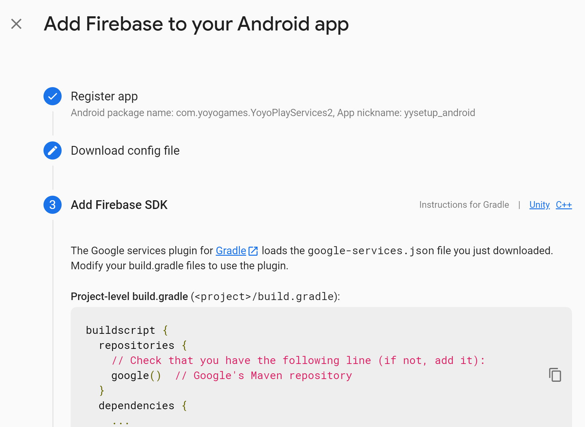 -
Click on the Continue to console button.
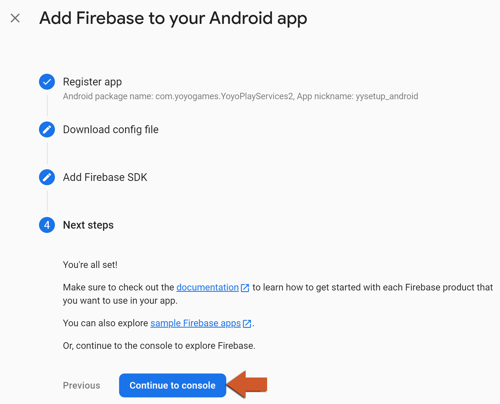 -
Now go into GameMaker, double click the extension FirebaseSetup asset.

-
In the extension panel just fill in the paths for the correct files (Android and/or iOS).
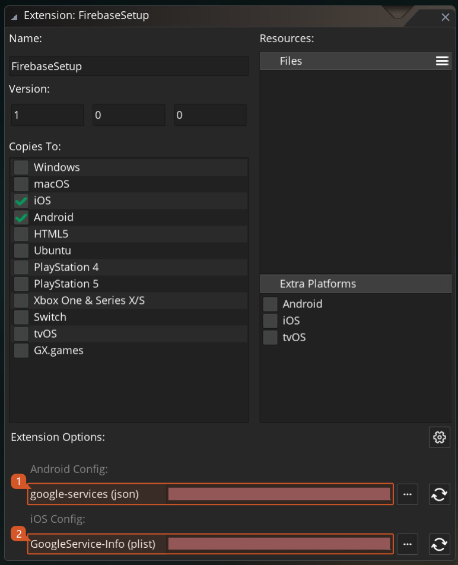
To ensure safety, refrain from storing credential files within your project directory. Instead, place them in a distinct folder to prevent accidental sharing of files in public repositories. During compilation, these files will be automatically incorporated into your project folder.
- You have now finished the main setup for all Firebase Android modules!
iOS Setup
This setup is necessary for all the Firebase modules using iOS and needs to be done once per project, and basically involves importing the ** GoogleServices-Info.plist file into your project.
Please refer to this Helpdesk article for instructions on setting up an iOS project.
-
Click the Settings icon (next to Project Overview) and select Project settings:
-
Now go to the Your apps section and click on the iOS button:
-
Fill the form with your iOS Bundle ID , App nickname and AppStore ID (last two are optional).
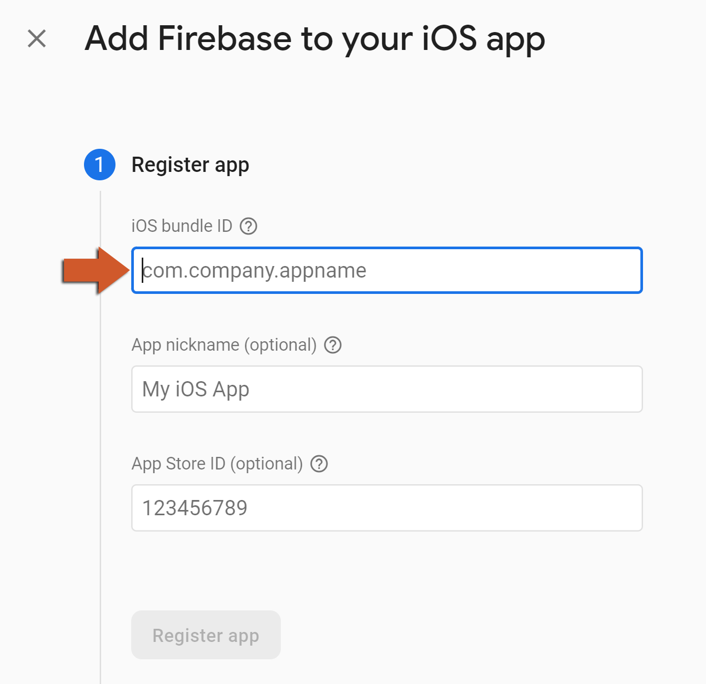 -
Click on ** Download GoogleService-info.plist (make sure to save this file as we will need it in subsequent steps).
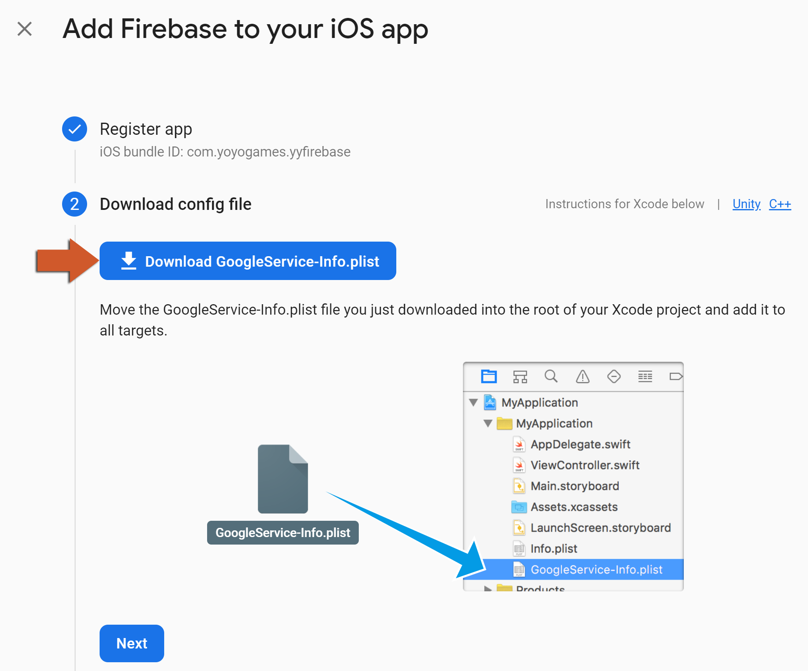 -
Ignore this screen, as this is already done in the extension.
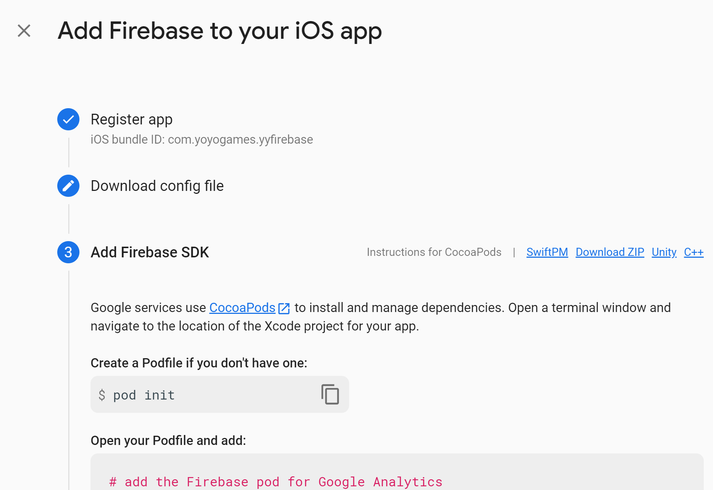 -
Ignore this screen as well, as this is also done in the extension.

-
Click on the Continue to console button:
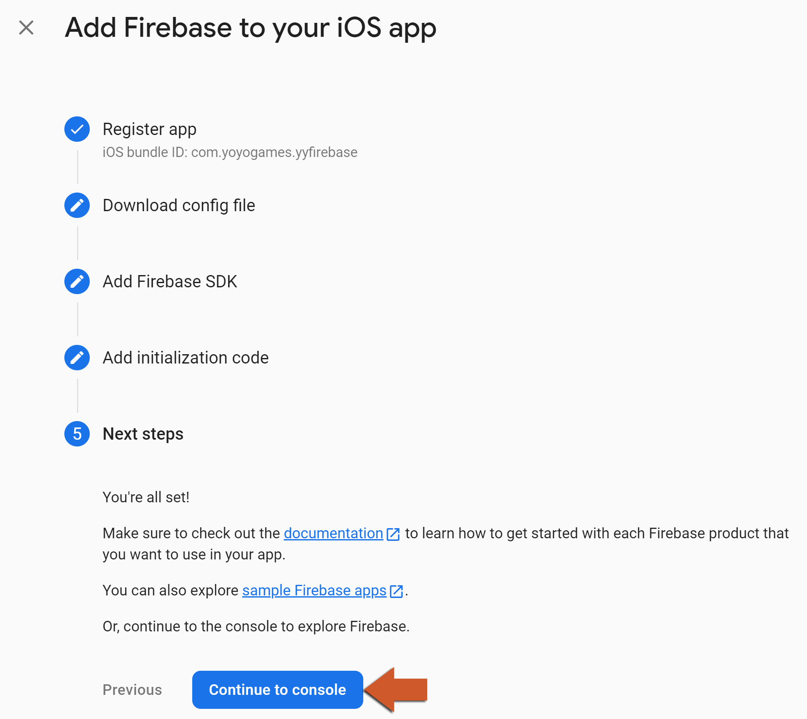 -
Now go into GameMaker, double click the extension FirebaseSetup asset.
-
In the extension panel just fill in the paths for the correct files (Android and/or iOS).
To ensure safety, refrain from storing credential files within your project directory. Instead, place them in a distinct folder to prevent accidental sharing of files in public repositories. During compilation, these files will be automatically incorporated into your project folder.
- Make sure to set up CocoaPods for your project unless you are only using the REST API in an extension (if one is provided -- not all extensions provide a REST API) or the Firebase Cloud Functions extension (which only uses a REST API).
- You have now finished the main setup for all Firebase iOS modules!
Web Setup
This setup is necessary for all the Firebase modules using Web export and needs to be done once per project, and basically involves adding Firebase libraries and your Firebase values to the index.html file in your project.
-
Click the Settings icon (next to Project Overview) and then Project settings:
-
Now go to the Your apps section and click on the Web (``) button:
-
Enter your App nickname (required):

-
On this screen, just copy the firebaseConfig struct:
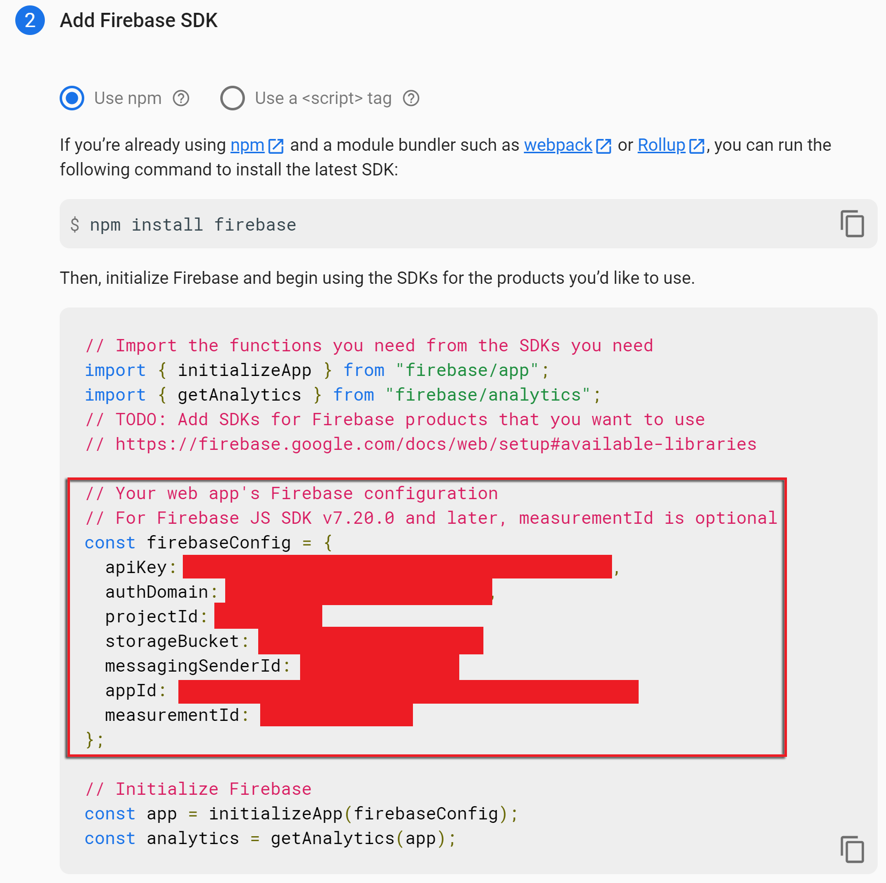 -
Paste the struct's contents in a text editor, replace all double quotes
"with single quotes'and copy the resulting text. Also make sure to add single quotes'to the struct keys. -
Paste the result in the Firebase Config Struct extension option. Note that this cannot contain any double quotes
".